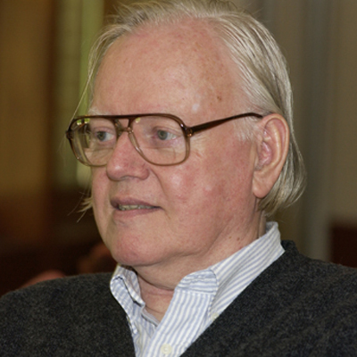
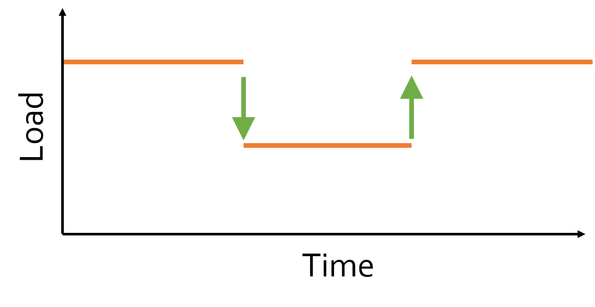
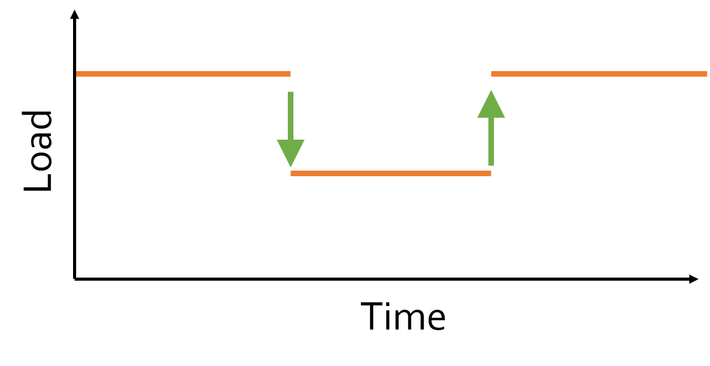
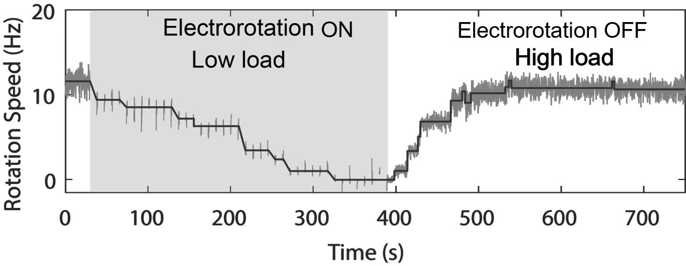
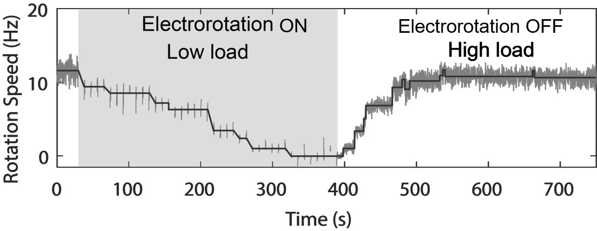
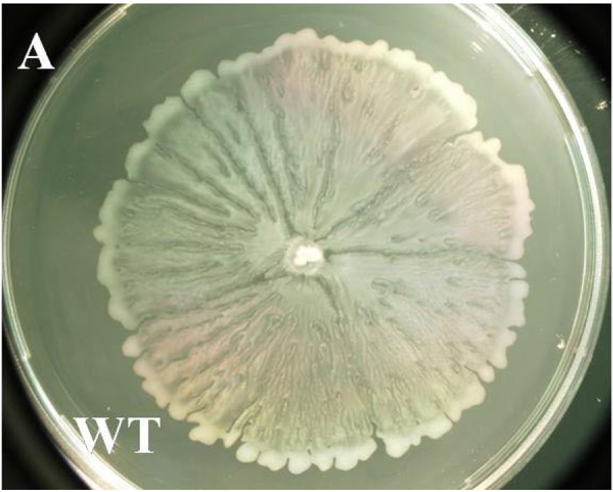

Mechano-microbiology: how bacteria move through and respond to their physical world
Navish Wadhwa
Arizona State University
@WadhwaLab
Mechanical forces shape the lives of organisms


How do organisms meaningfully interact with their physical world?
The bacterium E. coli as a model organism

Inhabits guts of mammals
Some strains are harmful, most harmless
Multiple flagella per cell
Bacteria are the smallest self-propelled swimmers

Many bacteria swim by rotating helical flagella
 Slowed down 20X
Slowed down 20X

A nanoscale motor powers
swimming in bacteria


N. Wadhwa and H. C. Berg, Nature Rev Microbiol 2021; J. Tan et al., Cell 2021
How does the motor cope with dramatic changes in load?
Collective motion of non-motile bacteria
How does the flagellar motor cope with changes in mechanical load?

Howard C. Berg
Harvard

Rob Phillips
Caltech

Yuhai Tu
IBM
Shabduli Sawant
ASU
Automatic gearshift in cars allows the engine to adapt to changing terrains


Automatic gearshift in E. coli allows the motor to adapt to changing loads


What is the physical and molecular mechanism underlying this automatic gearshift?
How can we change motor load?


 

Instantaneously
Reversibly
Controllably
Electrorotation allows
full control over motor load


Instantaneous
Reversible
Controllable
Electrorotation allows
full control over motor load

A change in load triggers stepwise changes in motor speed


 

The motor adapts to changes
in load by remodeling its stator

Wadhwa et al., PNAS 2019
Wadhwa et al., PNAS 2021
Wadhwa*, Sassi* et al., Nat Comm 2022
Molecular mechanism for torque-dependent unbinding rate

Low torque

High torque
Can cells move without flagella?

Eric Dudebout
ASU
Rebecca Osar
ASU→Cornell
David Blair
Utah
How do bacteria spread over surfaces?
Swarming depends on flagellar motility

J-M Swiecicki et al., Integr Biol 2013; Darnton et al., Biophys J 2010;
What if cells lack flagella?
Unpublished results, S. enterica
Can this phenomenon be replicated?
Unpublished results, E. coli
Fermentation enables sliding
Unpublished results
Model: Fermentation-driven osmotic imabalance drives sliding
Take home messages
The flagellar motor dynamically remodels to adapt to external load.
The motor can be used as a biological voltmeter.
Osmotic upshift depolarizes the cell but we do not understand how.
Cells lacking flagella can move over surfaces.
Acknowledgements
Wadhwa lab (ASU)
David Castillo
Carolina Gogerty
Shabduli Sawant
Bibek Gyawali
Rekha Joshi
Luis Meneses
Eric Dudebout
Frances Fuguy
Brennen Wise
Harvard University
Howard C. Berg
Sophia Belser
Jinming Yang
Daozheng Gong
Caltech
Rob Phillips
IBM
Yuhai Tu
Alberto Sassi
We are currently recruiting a postdoc!
Reversal of flagellar rotation enables changes in the swimming direction